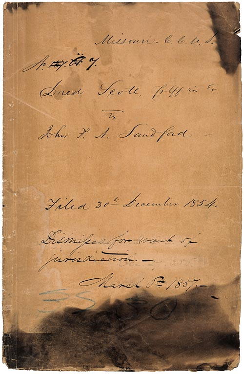

In the civil rights case of Dred Scott v. Sandford, which was argued in 1856 and then decided in 1857, the Supreme Court issued a ruling in which the Court stated that enslaved people were not citizens of the United States and, therefore, could not expect any protection from the federal government or the courts. The opinion also stated that Congress had no authority to ban slavery from a Federal territory.
This all began in 1833, when Dr. John Emerson, a surgeon with the U.S. Army, purchased Dred Scott, a slave, and ultimately moved Scott to a base in the Wisconsin Territory. Slavery was banned in the territory under the Missouri Compromise. Scott lived there for the following four years, hiring himself out for work during the lengthy periods when Emerson was away.
In 1840, Scott, his new wife, and their young kids moved to Louisiana and then to St. Louis with Emerson. Emerson passed in 1843, leaving the Scott family to his wife, Eliza Irene Sanford. In 1846, after laboring and saving for years, the Scotts wanted to buy their freedom from Sanford, but she refused. This directed Scott into suing the Standford family in state court to gain their freedom. They claimed that they were free due to their residence in a free territory where slavery was prohibited.
Previously, they lived with their enslaver, an army surgeon, at Fort Snelling, then in the free Territory of Wisconsin. The Scotts' freedom could be established because they had been held in bondage for extended periods in a free territory and were then returned to a slave state. Courts had ruled this way in the past.
Although this may seem like a straightforward case that had good odds, this preceding lasted 11 years. This became one of the most notorious decisions ever issued by the United States Supreme Court. Scott lost his case, which then worked its way through the Missouri state courts; and then he filed a new federal suit which eventually reached the Supreme Court.
While his case was making its way to the Supreme Court, the Dred Scott case grew in size and significance as slavery became the single most explosive issue in American politics. By the time the case reached the high court, it had come to have enormous political implications for the entire nation.
On March 6, 1857, Chief Justice Roger B. Taney read the majority opinion of the Court, which stated that enslaved people were not citizens of the United States and, therefore, could not expect any protection from the federal government or the courts. The opinion also stated that Congress had no authority to ban slavery from a federal territory. This decision moved the nation a step closer to the Civil War.

The reasons behind the decision were that the Court argued that they could not entertain Scott's case because federal courts, including the Supreme Court, are courts of "peculiar and limited jurisdiction" and may only hear cases brought by select parties involving limited claims.
The Court also argued that Scott's status as a citizen of a free state did not necessarily give him status as a U.S. citizen. While the states were free to create their citizenship criteria and had done so before the Constitution even came into being, the Constitution gives Congress sole authority to define national citizenship. They also stated that even if Scott was considered "free" under the laws of a state, he would still not qualify as an American citizen because he was black.
The decision of Scott v. Sandford, considered by many legal scholars to be the worst ever rendered by the Supreme Court, was overturned by the 13th and 14th amendments to the Constitution, which abolished slavery and declared all persons born in the United States to be citizens of the United States.